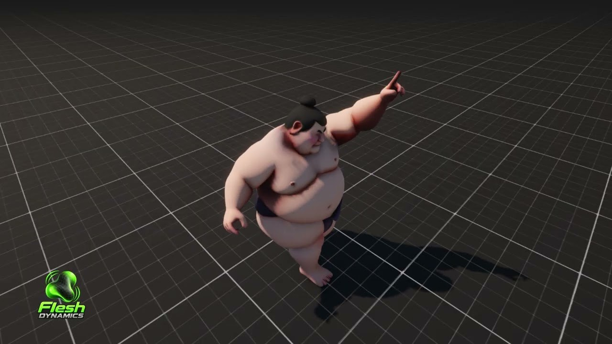

01
Flesh Dynamics：在 Unity 角色上加入即時軟體物理與碰撞變形
FrostPunchGames 推出的 Flesh Dynamics 可疊加在既有 SkinnedMeshRenderer 動畫之上，為指定身體區域加入柔軟組織的二次晃動與碰撞變形。Unity 版本已推出，Unreal Engine 版本仍在開發中。

Unreal ★★★★☆
完整分析
技術／流程變更
Flesh Dynamics 的核心不是取代骨架動畫，而是在既有角色動畫結果上再加入 soft-body 次級運動與碰撞變形，讓需要柔軟感的身體區域能以物理方式補足純 skinning 的表現。
Production 影響
對角色製作流程而言，這類工具可把原本需要額外骨骼、手動畫曲線或特製 shader 的局部晃動改成物理層處理；美術與動畫仍保留原始動作，只把柔軟變形交給 runtime 系統。
導入測試與限制
導入時要實測不同角色比例、碰撞體、快速動作與鏡頭距離下的穩定度，也要量測 CPU／GPU 成本與行動裝置表現。Unreal Engine 版本仍在開發，不應把 Unity 端結果直接視為 UE 可用性。
BRIEF｜來源已驗證；證據深度較有限，完整分析會明確區分已知資訊與待驗證事項。